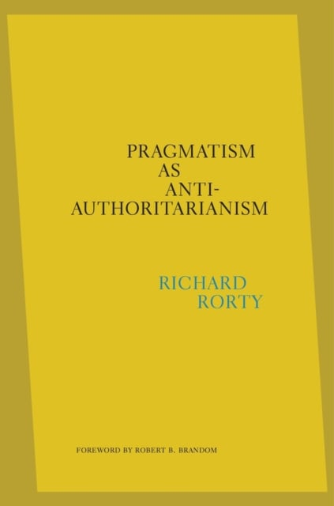

42:58 · 3 OPERE
Razionalità e coerenza.
Il filo del discorso
La coerenza è presentata dal relatore come una condizione essenziale del ragionamento razionale e come uno strumento per giudicare le affermazioni pubbliche. Il punto di partenza è una lettura polemica di Pragmatism as Anti-Authoritarianism di Richard Rorty, dalla quale passa al rapporto fra autorità culturale e validità degli argomenti. Gli esempi centrali sono il teorema di Pitagora, una inferenza su Socrate e le locomotive, il mentitore e le logiche a più valori. Nella seconda parte insiste sul riconoscimento dell’errore e sulla memoria: confrontare dichiarazioni pronunciate in momenti diversi richiederebbe una cronologia storica che non venga assorbita dal solo ricordo privato. La conclusione distingue titoli di studio e formazione al giudizio. La scheda conserva questa tesi critica, ma precisa i limiti di alcuni esempi: revisione di una raccomandazione e contraddizione logica non coincidono automaticamente; la soluzione proposta per il mentitore non elimina il problema in una semantica classica; gradi di verità e probabilità sono nozioni distinte.
I libri nel discorso

Pragmatism as Anti-Authoritarianism
Copertina: The Belknap Press of Harvard University Press, 17 agosto 2021, edizione inglese postuma a cura di Eduardo Mendieta, prefazione di Robert B. Brandom, ISBN 9780674248915. Rorty è morto nel 2007.
Immagine autentica dell’opera, controllata visivamente; l’edizione di riferimento non è attribuita al filmato.
Rorty, titolo Pragmatism as Anti-Authoritarianism e curatore Eduardo Mendieta espliciti; lettura di alcuni periodi, non dell’intero volume.
Passaggio 1:31 ↗ · Fonti e libro ↗
Propagandes
Identificazione probabile
Copertina: Economica · Classiques des sciences sociales · ISBN 9782717818482
Immagine autentica dell’opera, controllata visivamente; l’edizione di riferimento non è attribuita al filmato.
Jacques Ellul e istruzione come possibile veicolo della propaganda; probabile rinvio al testo, titolo non pronunciato.
Passaggio 40:40 ↗ · Fonti e libro ↗
Psicologia delle folle
Identificazione probabile
Copertina: Apogeo · 2025 · nuova traduzione dell’edizione integrale originale
Immagine autentica dell’opera, controllata visivamente; l’edizione di riferimento non è attribuita al filmato.
Le Bon e il rapporto fra istruzione e manipolazione delle folle; probabile rinvio all’opera già presente, senza capitolo o edizione.
Passaggio 40:40 ↗ · Fonti e libro ↗